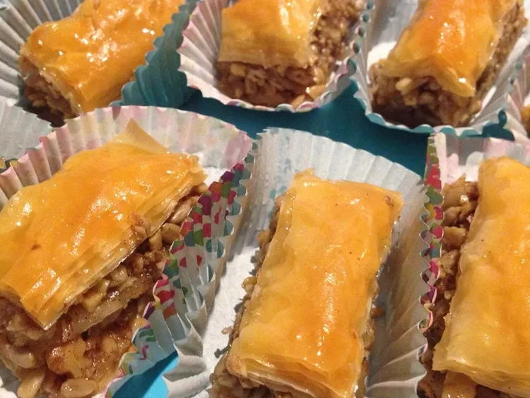

Odin Recipes

Baklava
Description
Ingredients
- 1 (16 ounce) package phyllo dough
- 1 pound chopped nuts
- 1 cup butter, melted
- 1 teaspoon ground cinnamon
- 1 cup water
- 1 cup white sugar
- 1 teaspoon vanilla extract
- ½ cup honey
Steps
- Gather all ingredients. Preheat the oven to 350 degrees F(175 degrees C). Butter the bottoms and sides of a 9x13-inch pan.
- Chop nuts and toss with cinnamon. Set aside.
- Unroll phyllo dough. Cut whole stack in half to fit pan. Cover phyllo with a dampened cloth to keep from drying out as you work. Place two sheets of dough in pan, butter thoroughly with a pastry brush. Repeat until you have 8 sheets layered.
- Sprinkle 2 to 3 tablespoons of nut mixture on top. Top with two sheets of dough, melted butter, nuts, layering as you go. The top layer should be about 6 to 8 sheets deep.
- Using a sharp knife cut into diamond or square shapes all the way to the bottom of the pan. You may cut into 4 long rows then make diagonal cuts. Bake for about 50 minutes until baklava is golden and crisp.
- Make sauce while baklava is baking. Boil sugar and water until sugar is melted. Add vanilla and honey. Simmer for about 20 minutes.
- Remove baklava from the oven and immediately spoon sauce over it. Let cool.
- Serve in cupcake papers. This freezes well. Leave it uncovered as it gets soggy if it is wrapped up.